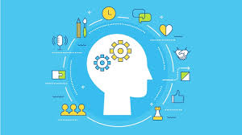

Soft Skills em HTML

Exemplos de Soft Skills importantes
- Comunicação eficaz é saber se expressar claramente e ouvir com atenção.
- Empatia é a capacidade de se colocar no lugar do outro.
- Trabalho em equipe envolve colaborar com respeito e harmonia.
- Adaptabilidade significa se ajustar bem a mudanças e novidades.
- Ética profissional é agir com responsabilidade e integridade.
- Autoconfiança ajuda na tomada de decisões seguras e conscientes.
Como aplicar Soft Skills no dia a dia
- Resolução de problemas consiste em encontrar soluções criativas para desafios.
- Gestão do tempo é organizar bem as tarefas dentro dos prazos.
- Pensamento crítico envolve analisar informações de forma lógica e objetiva.
- Proatividade é agir antes de ser solicitado, antecipando necessidades.
- Liderança é saber motivar e guiar um grupo em direção a objetivos.
- Capacidade de negociação ajuda a chegar a acordos vantajosos para todos.
Mais Soft Skills e exemplos práticos
- Habilidades interpessoais
- Escuta ativa mostra interesse genuíno no que o outro está dizendo.
-
Feedback construtivo
ajuda a melhorar sem desmotivar.
- Gestão emocional ajuda a lidar com o estresse e manter o equilíbrio.
- Motivação pessoal impulsiona a busca por metas e desafios.